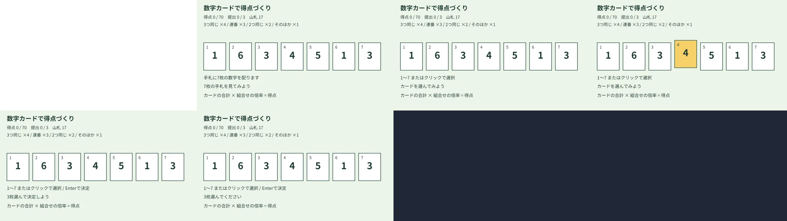
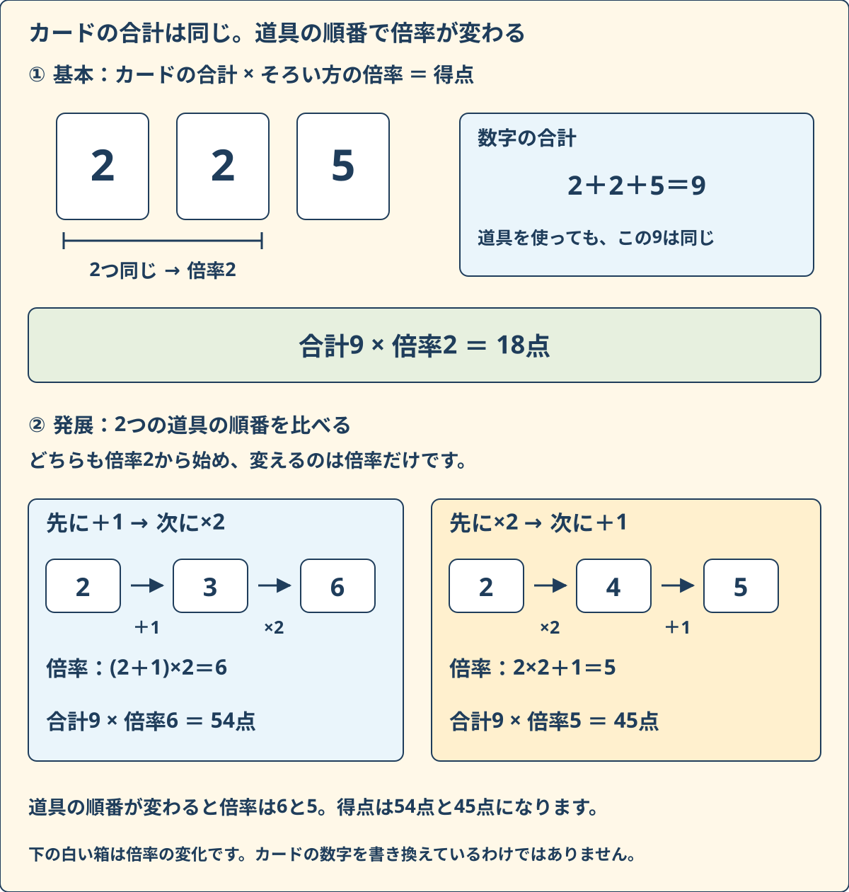

数字カードで得点づくりを作る
数字カードを3枚選び、組合せと倍率で得点を作ります。
始める前に
ZIPを展開してできたフォルダーでindex.htmlを開きます。ZIPにはひな型の3ファイルが入っています。
WindowsでZIPを展開する（動画）
作業用フォルダーのscript.jsを編集します。各ステップで保存し、index.htmlを再読み込みしてください。
ステップ 1：山札と手札を作る
このステップの見本を図で見る
1〜6を各4枚 → 6 × 4 = 24
混ぜた24枚を山札にする
hand.push(deck.pop())
山札が1減り、手札が1増える
24 - 7 = 17、hand.length < 7 の間繰り返す
山札17枚と手札7枚
ゲーム画面とコードの前後を見る

このステップの見本
function start() {
変わったコードの一例（script.js）const j = Math.floor(Math.random() * (i + 1));
見本で確かめること
7枚の数字と山札の残り17枚が見えます。
目標
1から6までのカードを配ります。
確認欄までは準備中です。作業を順に進め、確認欄で保存して動作を確かめます。
書く場所と置き換えるコード
カードとゲームの値を用意する
作業用フォルダーの script.js で、次の範囲を探して置き換えます。
置き換える範囲
"use strict";
const canvas = document.querySelector("#game-canvas");
const ctx = canvas.getContext("2d");
置き換えるコード
"use strict";
const canvas = document.querySelector("#game-canvas"), ctx = canvas.getContext("2d");
let deck, hand, selected, score, plays, state, message, round, bonus, startBonus, reverse;
変数は値に名前を付けて覚えるものです。deck は山札、hand は手札、selected は選んだ番号、score は得点です。ほかの変数は回数や状態、発展で使う値を覚えます。ctx はひな型が用意した描画の道具です。
山札を混ぜる
作業用フォルダーの script.js で、次の目印を探し、その直前に書きます。
目印
function start()書き足すコード
function shuffle(values) {
for (let i = values.length - 1; i > 0; i--) {
const j = Math.floor(Math.random() * (i + 1));
[values[i], values[j]] = [values[j], values[i]];
}
return values;
}
最後から順に、0からその番号までのランダムな位置と交換します。Math.floor() は小数点以下を切り捨てます。
手札を補充する
作業用フォルダーの script.js で、次の目印を探し、その直前に書きます。
目印
function start()書き足すコード
function deal() {
while (hand.length < 7 && deck.length) hand.push(deck.pop());
}
手札が7枚未満で山札が残っている間、pop() で山札の最後を取り出し、push() で手札に加えます。
新しい回を始める
作業用フォルダーの script.js で、次の目印を探し、その直前に書きます。
目印
function start()書き足すコード
function newRound() {
deck = shuffle(Array.from({length: 24}, (_, i) => Math.floor(i / 4) + 1));
hand = []; selected = []; score = startBonus; plays = 0; state = "playing"; message = "7枚の手札を見てみよう"; deal();
}
1〜6の数字をそれぞれ4枚作って混ぜ、空の手札を補充します。= は右の値を左に入れ、; は文の区切りです。
ゲームを初期化する
作業用フォルダーの script.js で、次の範囲を探して置き換えます。
置き換える範囲
function start() {
}
function update() {
}
置き換えるコード
function start() { round = 1; bonus = 1; startBonus = 0; reverse = false; newRound(); }
function update() {}
最初の回とボーナスの値を決め、newRound() を呼びます。update() はこの段階では空です。
背景と得点を描く
作業用フォルダーの script.js で、次の範囲を探して置き換えます。
置き換える範囲
ctx.clearRect(0, 0, canvas.width, canvas.height);
置き換えるコード
ctx.clearRect(0, 0, 800, 450); ctx.fillStyle = "#ecf4e9"; ctx.fillRect(0, 0, 800, 450);
ctx.fillStyle = "#203c32"; ctx.font = "bold 25px sans-serif"; ctx.fillText("数字カードで得点づくり", 28, 42);
ctx.font = "17px sans-serif";
const target = 70;
ctx.fillText("得点 " + score + " / " + target + " 提出 " + plays + " / 3 山札 " + deck.length, 28, 76);
ctx.fillText("3つ同じ ×4 / 連番 ×3 / 2つ同じ ×2 / そのほか ×1", 28, 106);
fillStyle は色、font は文字の大きさと書体です。目標70点、提出3回、山札の枚数と倍率の案内を描きます。
手札を並べる
作業用フォルダーの script.js で、次の目印を探し、その直後に書きます。
目印
ctx.clearRect(0, 0, 800, 450); ctx.fillStyle = "#ecf4e9"; ctx.fillRect(0, 0, 800, 450);
ctx.fillStyle = "#203c32"; ctx.font = "bold 25px sans-serif"; ctx.fillText("数字カードで得点づくり", 28, 42);
ctx.font = "17px sans-serif";
const target = 70;
ctx.fillText("得点 " + score + " / " + target + " 提出 " + plays + " / 3 山札 " + deck.length, 28, 76);
ctx.fillText("3つ同じ ×4 / 連番 ×3 / 2つ同じ ×2 / そのほか ×1", 28, 106);
書き足すコード
hand.forEach((value, index) => {
const x = 28 + index * 105, y = selected.includes(index) ? 164 : 174;
ctx.fillStyle = selected.includes(index) ? "#f6cf68" : "#ffffff"; ctx.fillRect(x, y, 90, 112);
ctx.strokeStyle = "#365c4d"; ctx.lineWidth = 2; ctx.strokeRect(x, y, 90, 112);
ctx.fillStyle = "#203c32"; ctx.font = "bold 38px sans-serif"; ctx.fillText(String(value), x + 34, y + 65);
ctx.font = "16px sans-serif"; ctx.fillText(String(index + 1), x + 10, y + 24);
});
forEach() で手札を順に描きます。横位置は 28 + index * 105 で、選択中なら10上にずらします。番号表示には配列の番号に1を足します。
得点の案内を描く
作業用フォルダーの script.js で、次の目印を探し、その直後に書きます。
目印
hand.forEach((value, index) => {
const x = 28 + index * 105, y = selected.includes(index) ? 164 : 174;
ctx.fillStyle = selected.includes(index) ? "#f6cf68" : "#ffffff"; ctx.fillRect(x, y, 90, 112);
ctx.strokeStyle = "#365c4d"; ctx.lineWidth = 2; ctx.strokeRect(x, y, 90, 112);
ctx.fillStyle = "#203c32"; ctx.font = "bold 38px sans-serif"; ctx.fillText(String(value), x + 34, y + 65);
ctx.font = "16px sans-serif"; ctx.fillText(String(index + 1), x + 10, y + 24);
});
書き足すコード
ctx.fillStyle = "#203c32"; ctx.font = "18px sans-serif";
ctx.fillText("手札に7枚の数字を配ります", 28, 323);
ctx.fillText(message, 28, 358);
ctx.fillText("カードの合計 × 組合せの倍率 = 得点", 28, 395);
手札、メッセージ、得点の計算方法を表示します。
キーとクリックを受け取る準備をする
作業用フォルダーの script.js で、次の範囲を探して置き換えます。
置き換える範囲
function gameLoop() {
update();
draw();
requestAnimationFrame(gameLoop);
}
start();
gameLoop();
置き換えるコード
window.addEventListener("keydown", event => {
if (event.ctrlKey || event.altKey || event.metaKey || event.repeat) return;
});
canvas.addEventListener("click", event => {
const rect = canvas.getBoundingClientRect(), x = (event.clientX - rect.left) * 800 / rect.width, y = (event.clientY - rect.top) * 450 / rect.height;
});
function gameLoop() { update(); draw(); requestAnimationFrame(gameLoop); }
start(); gameLoop();
キーやクリックの処理を登録します。クリックは画面上の座標を Canvas 内部の800×450に直します。入力の具体的な処理は次の段階で加えます。
保存後の確かめ方
保存してゲーム画面を更新する（動画）
index.html を再読み込みします。7枚の数字と山札の残り17枚が見えます。 この段階の見本を開く
小さな練習
24枚から7枚配ると山札は何枚ですか。
練習の答え
17枚です。
ステップ 2：3枚を選ぶ
このステップの見本を図で見る
このステップの見本
この行を足す前 変わったコードの一例（script.js）
if (state !== "playing" || index < 0 || index >= hand.length) return;
見本で確かめること
1から7のキーかカードのクリックで色が変わります。
目標
手札の番号かクリックで3枚まで選びます。
確認欄までは準備中です。作業を順に進め、確認欄で保存して動作を確かめます。
書く場所と置き換えるコード
選択の案内を変える
作業用フォルダーの script.js で、次の範囲を探して置き換えます。
置き換える範囲
hand = []; selected = []; score = startBonus; plays = 0; state = "playing"; message = "7枚の手札を見てみよう"; deal();
置き換えるコード
hand = []; selected = []; score = startBonus; plays = 0; state = "playing"; message = "カードを選んでみよう"; deal();
新しい回のメッセージをカード選択の案内にします。
カードを選択する
作業用フォルダーの script.js で、次の目印を探し、その直後に書きます。
目印
function start() { round = 1; bonus = 1; startBonus = 0; reverse = false; newRound(); }
書き足すコード
function selectCard(index) {
if (state !== "playing" || index < 0 || index >= hand.length) return;
if (selected.includes(index)) selected = selected.filter(i => i !== index);
else if (selected.length < 3) selected.push(index);
else message = "選べるのは3枚までです";
}
範囲外や終了後は処理せず、選択済みなら外し、未選択なら3枚まで追加します。filter() は外す番号以外を残します。
操作方法を表示する
作業用フォルダーの script.js で、次の範囲を探して置き換えます。
置き換える範囲
ctx.fillText("手札に7枚の数字を配ります", 28, 323);
置き換えるコード
ctx.fillText("1〜7 またはクリックで選択", 28, 323);
1〜7またはクリックで選ぶ操作を案内します。
数字キーでカードを選ぶ
作業用フォルダーの script.js で、次の目印を探し、その直後に書きます。
目印
if (event.ctrlKey || event.altKey || event.metaKey || event.repeat) return;
書き足すコード
if (/^[1-7]$/.test(event.key)) selectCard(Number(event.key) - 1);
1〜7のキーを数値にして1を引き、配列の番号0〜6に直します。
クリック位置でカードを選ぶ
作業用フォルダーの script.js で、次の目印を探し、その直後に書きます。
目印
const rect = canvas.getBoundingClientRect(), x = (event.clientX - rect.left) * 800 / rect.width, y = (event.clientY - rect.top) * 450 / rect.height;
書き足すコード
const index = Math.floor((x - 28) / 105);
if (index >= 0 && index < hand.length && x >= 28 + index * 105 && x <= 118 + index * 105 && y >= 164 && y <= 286) selectCard(index);
横位置からカード番号を求め、その四角の内側なら selectCard() を呼びます。
保存後の確かめ方
1から7のキーかカードのクリックで色が変わります。 この段階の見本を開く
小さな練習
3枚選んだ後に4枚目を選ぶと何枚になりますか。
練習の答え
3枚のままです。
ステップ 3：組合せを判定する
このステップの見本を図で見る
3つ同じ → (3 + 3 + 3) × 4 = 36
同じ数字3枚の倍率は4
連番 → (2 + 3 + 4) × 3 = 27
1ずつ増える3枚の倍率は3
2つ同じ → (2 + 2 + 5) × 2 = 18
合計が同じでも組合せで得点が違う
ゲーム画面とコードの前後を見る
このステップの見本
この行を足す前 変わったコードの一例（script.js）
if (sorted[0] === sorted[2]) { multiplier = 4; name = "3つ同じ"; }
見本で確かめること
画面に組合せごとの倍率が表示されます。
目標
同じ数字や連番に応じた倍率を決めます。
確認欄までは準備中です。作業を順に進め、確認欄で保存して動作を確かめます。
書く場所と置き換えるコード
3枚の組合せと得点を調べる
作業用フォルダーの script.js で、次の目印を探し、その直後に書きます。
目印
else message = "選べるのは3枚までです";
書き足すコード
}
function evaluateCards(values) {
const sorted = [...values].sort((a, b) => a - b);
const sum = values.reduce((total, value) => total + value, 0);
let multiplier = 1, name = "そのほか";
if (sorted[0] === sorted[2]) { multiplier = 4; name = "3つ同じ"; }
else if (sorted[0] + 1 === sorted[1] && sorted[1] + 1 === sorted[2]) { multiplier = 3; name = "連番"; }
else if (sorted[0] === sorted[1] || sorted[1] === sorted[2]) { multiplier = 2; name = "2つ同じ"; }
return {sum, multiplier, name, points: sum * multiplier};
小さい順に並べ、合計を reduce() で求めます。3つ同じは4倍、連番は3倍、2つ同じは2倍、それ以外は1倍です。たとえば2・3・4は合計9、3倍で27点です。

2と2と5の合計は9です。2つ同じなので倍率2を掛けると18点になります。
保存後の確かめ方
画面に組合せごとの倍率が表示されます。 この段階の見本を開く
小さな練習
2、2、5の合計と倍率はいくつですか。
練習の答え
合計9、倍率2で18点です。
ステップ 4：選んだ3枚で得点する
このステップの見本を図で見る
このステップの見本
hand = []; selected = []; score = startBonus; plays = 0; state = "playing"; message = "カードを選んでみよう"; deal();
変わったコードの一例（script.js）hand = []; selected = []; score = startBonus; plays = 0; state = "playing"; message = "3枚選んで決定しよう"; deal();
見本で確かめること
3枚選んでEnterを押すと点数と提出回数が増えます。
目標
3枚の提出と補充を作ります。
確認欄までは準備中です。作業を順に進め、確認欄で保存して動作を確かめます。
書く場所と置き換えるコード
決定の案内を変える
作業用フォルダーの script.js で、次の範囲を探して置き換えます。
置き換える範囲
hand = []; selected = []; score = startBonus; plays = 0; state = "playing"; message = "カードを選んでみよう"; deal();
置き換えるコード
hand = []; selected = []; score = startBonus; plays = 0; state = "playing"; message = "3枚選んで決定しよう"; deal();
3枚選んで決定するようにメッセージを変えます。
選んだ3枚を提出する
作業用フォルダーの script.js で、次の目印を探し、その直後に書きます。
目印
return {sum, multiplier, name, points: sum * multiplier};
}
書き足すコード
function submit() {
if (state !== "playing") return;
if (selected.length !== 3) { message = "3枚選んでください"; return; }
const result = evaluateCards(selected.map(index => hand[index]));
score += result.points; plays++;
hand = hand.filter((_, index) => !selected.includes(index)); selected = []; deal();
message = result.name + "：" + result.sum + " × " + result.multiplier + " = " + result.points + "点";
}
3枚以外は受け付けません。evaluateCards() の結果を得点に加え、提出した手札を除いて補充し、計算結果を表示します。
決定キーを案内する
作業用フォルダーの script.js で、次の範囲を探して置き換えます。
置き換える範囲
ctx.fillText("1〜7 またはクリックで選択", 28, 323);
置き換えるコード
ctx.fillText("1〜7 またはクリックで選択 / Enterで決定", 28, 323);
Enter で決定できることを表示します。
Enter で提出する
作業用フォルダーの script.js で、次の目印を探し、その直後に書きます。
目印
if (/^[1-7]$/.test(event.key)) selectCard(Number(event.key) - 1);
書き足すコード
if (event.key === "Enter") submit();
Enter が押されたら submit() を呼びます。
保存後の確かめ方
3枚選んでEnterを押すと点数と提出回数が増えます。 この段階の見本を開く
小さな練習
2枚だけでEnterを押すと提出回数は増えますか。
練習の答え
増えません。
ステップ 5：目標と再挑戦を作る
このステップの見本を図で見る
69 < 70 かつ plays >= 3 → over
3回使い切ったので終了
score >= 70 を先に調べる → clear
最後の提出で届いてもクリア
ゲーム画面とコードの前後を見る
このステップの見本
この行を足す前 変わったコードの一例（script.js）
} else if (plays >= 3) { state = "over"; message = "あと一歩！ Spaceで最初から"; }
見本で確かめること
70点以上ならクリア、3回使って未達なら終了します。
目標
3回以内に70点を目指します。
確認欄までは準備中です。作業を順に進め、確認欄で保存して動作を確かめます。
書く場所と置き換えるコード
目標点と提出回数で結果を決める
作業用フォルダーの script.js で、次の目印を探し、その直後に書きます。
目印
message = result.name + "：" + result.sum + " × " + result.multiplier + " = " + result.points + "点";
書き足すコード
const target = 70;
if (score >= target) {
state = "clear"; message = "クリア！ Spaceで最初から";
} else if (plays >= 3) { state = "over"; message = "あと一歩！ Spaceで最初から"; }
得点が70以上ならクリアです。届かないまま3回提出したら終了します。目標達成を先に調べます。
Space で最初から始める
作業用フォルダーの script.js で、次の目印を探し、その直後に書きます。
目印
if (event.key === "Enter") submit();
書き足すコード
if ((state === "clear" || state === "over") && event.code === "Space") { event.preventDefault(); start(); }
クリアまたは終了後に Space を押すと start() を呼び、最初の回から始めます。
保存後の確かめ方
70点以上ならクリア、3回使って未達なら終了します。 この段階の見本を開く
小さな練習
3回目に70点に届いたらどうなりますか。
練習の答え
クリアになります。